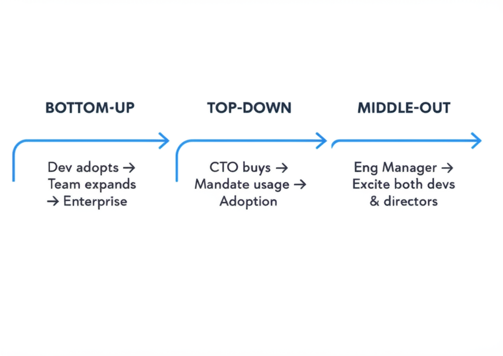
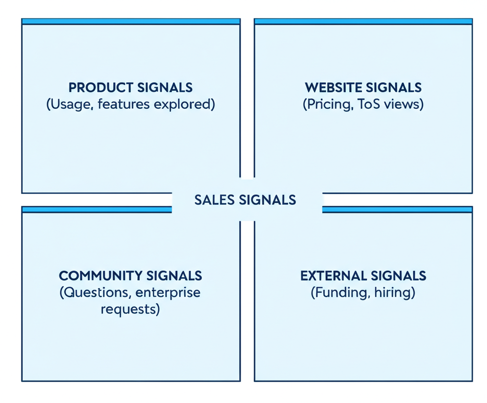

Part 1: Developer GTM Fundamentals
The Core Truth
Developers don't want to talk to you.
They prefer:
- Self-serve exploration
- Documentation over demos
- Trying before buying
- Technical validation over sales pitches
Build your GTM around this reality.
Bottom-Up vs Top-Down vs Middle-Out
Bottom-up:
- Developers adopt → expand within team → enterprise deals
- Classic PLG motion
- Longer but stickier
Top-down:
- Sell to CTO/VP → mandate usage
- Faster enterprise deals
- Less organic adoption
Middle-out:
- Target engineering managers
- Simultaneously excite devs (product experience) and directors (product value)
- Accelerates purchasing decision
Part 2: The 1-2-3 GTM Framework (Adam Gross)
Three Motions, Three Value Props
| Motion | Value Prop Focus | Persona | Metric |
|---|---|---|---|
| 1. Free | Individual developer | Personal productivity | Adoption |
| 2. Self-serve | Team | Collaboration | MRR |
| 3. Enterprise | Organization | Compliance, scale | ACV |
Motion 1: Free
- Focus: Developer value proposition
- Goal: Adoption, habit formation
- Measurement: Active users, engagement
Motion 2: Self-Serve
- Focus: Team value proposition (collaboration)
- Goal: Revenue from self-upgrade
- Measurement: MRR, team expansion
Motion 3: Enterprise
- Focus: Organization value proposition (compliance, security, scale)
- Goal: Large ACV deals
- Measurement: ACV, expansion
Part 3: Product-Led Sales
What is Product-Led Sales?
Sales that happens AFTER users experience product value.
- Not: Cold outreach to strangers
- Instead: Warm outreach to engaged users
Who to Reach Out To
From Ben Williams (PLG advisor):
- Identify account engaged beyond activity threshold
- Verify it's your ideal customer profile
- Find the BUYER persona in that account
- Reach out to the buyer, NOT the developer end-user
Critical insight: Don't burn channels trying to get developers to "hop on a quick call." It rarely works.
When NOT to Reach Out
Avoid: Free trialists who churned and never really used product.
You'll lose 50-70% of free trials. Those aren't the ones to engage.
Engage: Users actually using the product, especially those who:
- Are stuck (can help)
- Are likely to pay more (expansion signal)
Part 4: Sales Signals
Big List of Sales Signals
Combine signals from:
- Product usage
- Docs activity
- Website behavior
- Community (Slack, Discord)
- GitHub repos
- Social media
Product signals:
- Usage above threshold
- Team expansion
- Enterprise feature exploration
- Pricing page visits
Website signals:
- Terms of service views
- Security/compliance page visits
- Contact us clicks
- Multiple stakeholders visiting
Community signals:
- Technical questions indicating serious eval
- Mentions of decision timeline
- Requests for enterprise features
External signals:
- Funding announcements
- Hiring for relevant roles
- Competitor mentions
Using Signals Effectively
- Score signals (high/medium/low intent)
- Combine signals for confidence
- Time outreach to signal clusters
- Personalize based on signal ("I saw you were exploring...")
Part 5: The Developer Journey
Journey Stages
1. Discover
- How do they find you?
- Channels: Search, community, word of mouth
2. Start
- First interaction with product
- Key: Time to first Hello World
3. Activate
- First value moment
- Aha moment definition
4. Convert
- Free to paid
- Individual to team
5. Scale
- Team to enterprise
- Expansion triggers
Mapping Signals to Journey
- Discover → Start: SEO, ads, community mentions
- Start → Activate: Docs visits, quickstart completion
- Activate → Convert: Pricing page, team features explored
- Convert → Scale: Usage growth, enterprise feature requests
Part 6: Enterprise Sales
Enterprise Value Props
Different from developer value props:
- Compliance (SOC2, HIPAA, etc.)
- Security (SSO, audit logs)
- Scale (SLAs, support)
- Control (self-hosting, data residency)
The Internal Sale
Developers need to sell your tool to others.
Help them with:
- Use case pages (for less technical buyers)
- Enterprise features visibility
- "Convince your boss" content pack:
- Value prop summary
- Feature comparison
- Case studies
- ROI calculator
- Email templates
Enterprise Outreach
From Datadog CMO:
Marketing role in outbound:
- Product marketing (positioning)
- Enablement
- "Giving excuses to meet enterprise prospects"
Tactic for startups: Build circle of influence within champion/buyer community. Host small dinners for peers (CTOs at e-commerce, etc.). Use first attendees to create FOMO.
Part 7: Pipeline Building
Pipeline Sources
Typically 4 sources:
- Inbound (marketing)
- BDR/SDR (sales development)
- AE (account executives)
- Partner/Channel (partnerships)
Best practice: Monthly pipeline review where marketing, sales, and partnerships come together.
What Works for Inbound (from Datadog)
- Paid media (Google, LinkedIn)
- Webinar programs
- Third-party events
- Organic content (SEO-heavy)
Marketing Metrics for Sales
Core metrics to own:
- MQLs (awareness proxy when MQL→Opp conversion is stable)
- Opportunities
- Pipeline value
- Win rate
Part 8: Attribution and Alignment
The Attribution Trick
From Datadog CMO:
Together with sales, go through a couple of enterprise customer journeys including all marketing touches and sales engagement.
Do this quarterly.
Result: GTM org appreciates contributions from different teams, fights less about source attribution.
Marketing and Sales Alignment
Information flow is critical:
- Marketing needs to know what sales hears
- Sales needs to know what marketing sees
- Joint pipeline reviews
- Shared definitions
Part 9: Selling to Developers Specifically
What Works
- Help, don't sell: Focus on solving their problem
- Technical depth: They'll test your knowledge
- Transparency: Acknowledge tradeoffs
- Hands-on: Let them try
What Doesn't Work
- Cold calls asking for "quick chat"
- Generic nurture emails
- High-pressure tactics
- Overselling capabilities
The Build vs Buy Conversation
Developers often prefer "build then buy."
From HN discussion: "Buy-then-build can be a great strategy. Going into a decision with the mindset readiness for 'then-build', you can learn from existing products, hit their limits and understand what the custom version you'll need."
Implication: Position as something they could build but shouldn't. Make build cost clear.
Part 10: Budget and Resources
Budget Allocation (from Datadog CMO)
- Pipeline vs brand: 70% pipeline generation, 30% brand awareness
- Headcount vs program: 50/50
- Digital vs events:
- SMB: 70% digital, 30% events
- Enterprise: 30% digital, 70% events
- Marketing % of budget: 7-9% typical, higher for PLG (~20% at Datadog)
Building the Team
For PLG:
- Growth/product marketing
- Developer advocates
- Content creators
For enterprise:
- Field marketing
- SDR/BDR team
- Solutions engineers
Quick Reference: Sales Motion Checklist
PLG Foundation
- Free tier that delivers value
- Clear upgrade path
- Usage tracking implemented
- Activation metrics defined
Product-Led Sales
- Signal scoring system
- Qualified account definition
- Buyer vs user personas distinguished
- Outreach timing rules
Enterprise Readiness
- Enterprise features documented
- Security/compliance pages
- Case studies available
- "Convince your boss" pack
Pipeline Building
- Inbound channels defined
- Outbound playbook
- Partner program
- Monthly pipeline review
Resources & Further Reading
GTM Frameworks
- 1-2-3 Framework for GTM — Adam Gross (Heavybit)
- Bottom-Up vs Top-Down vs Middle-Out — HN Discussion
- Build vs Buy Developer Psychology — HN Discussion
Product-Led Sales
- PLG to Product-Led Sales Playbook — Gabriel Madureira
- Who to Reach Out to in PLG Motion — Ben Williams
- Product-Led Geek Newsletter — Ben Williams
Sales Signals
- 100+ List of Sales Signals — Kevin White (Common Room)
- GitHub Signals Monitoring + 22% Response Rate
- How Apollo Fuels GTM with OSS Usage
Pipeline & Sales
- Learnings from Datadog CMO — On pipeline, attribution, anti-retention patterns
- Best Automated GTM Plays — Kyle Poyar
Tools
- Syften — Social listening
- Common Room — Developer signals
- Reo.dev — Developer activity tracking
- Clay — Enrichment for GTM